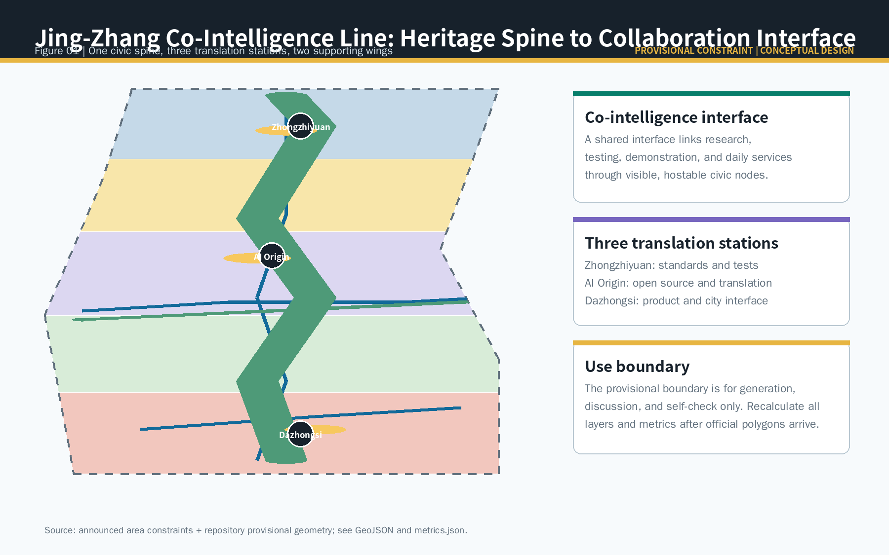
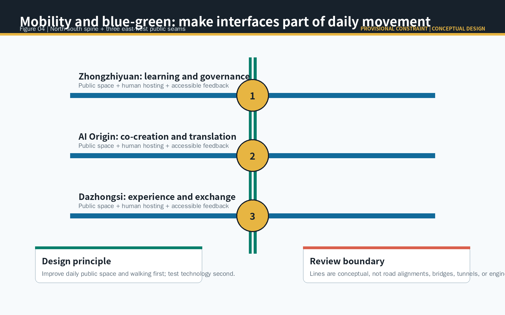

Standards and safety workbench
Overview map

Three scope levels · Key areas
Open-source table and talent service
Station-facing city interface room
Land-use structure · Walking and mobility · Blue-green public space

Buildings and renewal · AI scenarios
01Open-source release
02Model evaluation
03Enterprise service
04Walking review
05Event safety
06Memory guide
07Talent service
08Environmental care
09Device experience
10Rule display
Core metrics
site_area_sqm11.413 km²
green_ratio10.83%
public_space_ratio0.92%
Task coverage
The compliance matrix covers announcement tasks and agent.1-agent.6; standards and depth matrices retain the full audit record.
Sources · Assumptions
See sources.json. Spatial evidence comes from this package GeoJSON; values are conceptual recalculations under provisional geometry.